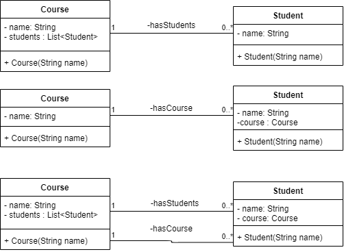

Spring
Les 1 - Spring!
Doelen
- Vertalen van domeinmodel naar database met JPA
- Begrijpen van de Spring architectuur
- Data opslaan in database
- Data lezen uit de database
Maar eerst
Is het iedereen gelukt met het huiswerk?
Weten we wat bi-directioneel is?
Bi-directioneel
JPA
Jakarta Persitence API
JPA - code
import javax.persistence.Entity;
import javax.persistence.FetchType;
import javax.persistence.GeneratedValue;
import javax.persistence.GenerationType;
import javax.persistence.Id;
import javax.persistence.JoinColumn;
import javax.persistence.ManyToOne;
JPA - code (2)
@Entity
public class Dog {
}
JPA - code (2)
@Entity
public class Dog {
}
- Moet een publieke lege constructor hebben.
- Attributen moeten package(-private) of protected zijn.
- Attributen moeten publieke getters en setters krijgen
- https://docs.oracle.com/javaee/6/tutorial/doc/bnbqa.html
JPA - code (3)
@Id
@GeneratedValue(strategy = GenerationType.AUTO)
private long id;
@ManyToOne(fetch=FetchType.LAZY)
@JoinColumn(name = "OWNER_ID")
private ApplicationUser owner;
@OneToMany
@JoinColumn(name="OWNER_ID", referencedColumnName = "USER_ID")
private List<Dog> dogs;
JPA - code (4)
@OneToMany(fetch = FetchType.EAGER, mappedBy = "owner")
private List<Dog> dogs;
@ManyToOne
private ApplicationUser owner;
Opdracht
- Start een nieuwe project met Spring Initializr
- Bedenk zelf minimaal twee domeinklasse voor je eindopdracht
- Programmeer deze met behulp van JPA en zorg dat de tabellen in je database komen.
- Gebruik de voorbeelden van Nick
- Maak een extra database aan voor je eindopdracht.
- Initializr: Spring Web, Spring Data JPA, PostgreSQL Driver
Spring Architectuur

Controller - laag
- Zorgt voor de rest-endpoints
- Op basis van link en soort request wordt code uitgevoerd.
HTTP Requests
- GET
- POST
- PUT
- DELETE
JSON
- Het antwoord van de server wordt mbv. JSON gecommuniceerd
- POST & PUT requests verwachten input data.
- In dit geval: in de vorm van JSON.
Service layer
- Bevat authorisatie & authenticatie
- Controleert de validiteit van de data
- Doet crud operaties op de database
- Gebruikt depency injection
Tijd om te programmeren
- We gebruiken Postman of HTTP requests te sturen en uit te lezen.
- Code staat hier op Github:
- TODO